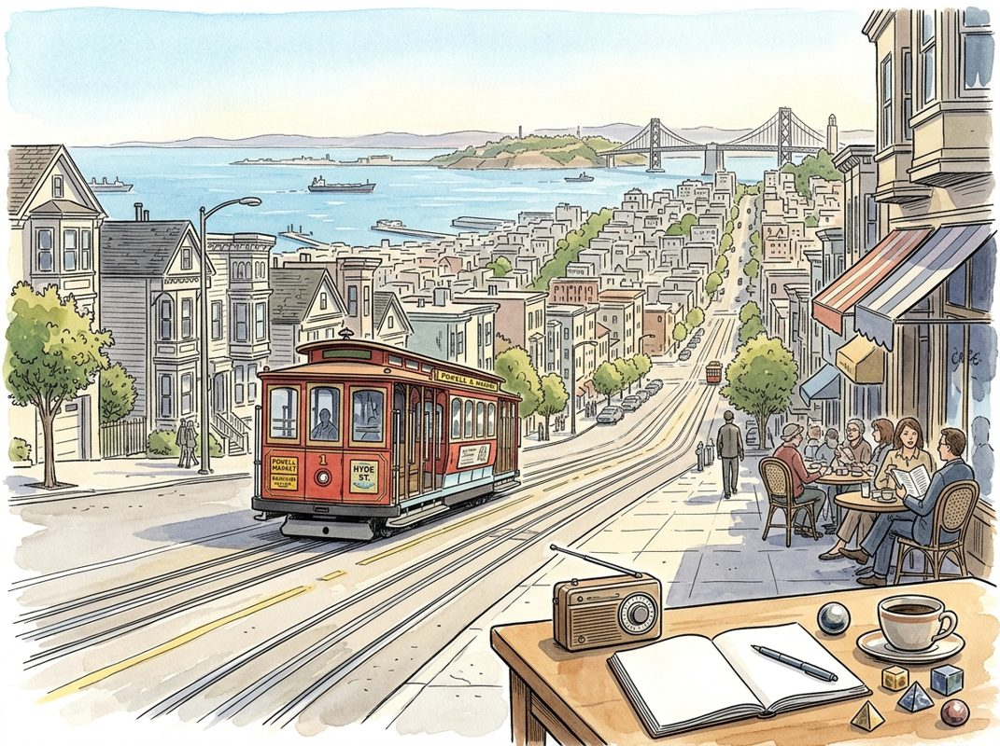

8/28

播客简报 2026-08-28
今日更新
Exchange Trade
来源：The Capital Cycle Podcast
原链接：https://shows.acast.com/the-capital-cycle-podcast/episodes/exchange-trade
状态：已读完整音频 transcript
本期播客深入探讨了美国上市衍生品交易所（如CME Group和ICE）的独特商业模式、强大的竞争优势及其面临的挑战，对于希望理解金融市场基础设施、网络效应和资本周期理论的投资者而言，是极具价值的深度分析。
- 赌场庄家：衍生品交易所的盈利模式与独特优势：已故的查理·芒格曾将金融业比作赌场，而衍生品交易所正是其中的“庄家”。与传统赌场不同，交易所不承担交易的盈亏风险，而是通过清算买卖双方的交易，从每笔交易中收取少量费用。这种模式使得交易所无需投入大量自有资本，却能从市场活动中稳定获利。播客指出，与银行或保险公司不同，市场波动性对交易所而言并非风险，反而是促成交易、提升营收的驱动力。无论是养老基金对冲久期、炼油厂锁定裂解价差，还是宏观基金进行对向交易，所有参与者都需向交易所支付费用。这种“庄家”模式，加上其清算所由参与者自身抵押的特性，使得CME Group和Intercontinental Exchange (ICE) 成为美国利润率最高的公司之一，其利润率超过60%，且资本需求极低，是马拉松投资组合的长期持股。
- 资本周期下的挑战：新竞争者与市场担忧：尽管交易所盈利能力惊人，但其股价在过去一年左右有所回调，这反映了市场对其未来增长的担忧。主要有三大顾虑：新竞争者的出现、监管机构可能放宽对轻量级竞争对手的限制，以及部分增长可能源于投机泡沫。根据资本周期理论，如此高的回报率理应吸引新资本进入，直至超额利润被竞争殆尽。例如，FMX在2024年推出，获得了全球十大银行和交易公司的支持，旨在提供更低的费用和针对CME利率特许经营权的交叉保证金服务。然而，两年过去，FMX在利率期货市场的份额仍处于低个位数，其增长率虽在百分比上看似可观，但基数很小。关键指标——未平仓合约（open interest）并未大量转移，即使有折扣，交易者也鲜少迁移其现有头寸，这凸显了现有交易所的强大护城河。
- 强大的护城河：网络效应与清算优势：交易所的强大护城河并非简单的费用结构，而是其难以复制的流动性池和清算优势。费用表可以一夜之间被模仿，但一个深厚的流动性池却不能。交易所提供的核心价值并非仅仅是执行交易，更重要的是“保证”——确保交易的另一方在今天和未来五年内都能以公平的价格出现。每一份留在现有交易所的合约都加深了这种保证。此外，清算服务是其护城河的另一个重要方面。ICE最新的保证金计算方法涵盖了超过一千种能源合约，允许客户对相关联的头寸进行净额结算（例如，多头天然气，空头电力），从而显著减少所需抵押品。这相当于一种价格优惠，是任何没有相同产品广度的竞争者无法匹敌的。这种优势还会自我强化：每一个新的市场参与者都会改善池中所有现有参与者的净额结算能力。
- 半内生增长：交易所如何“制造”自己的市场：播客引入了一个经济学概念——“半内生增长”，来解释交易所如何主动创造市场需求。通常，大多数公司需要其终端市场自然增长（例如，酒类公司需要人们喝更多的酒），这种需求被认为是外生的。然而，交易所却能“制造”自己的终端市场，实现部分增长的内生化。它们可以利用相同的清算所、分销网络和规则手册，以几乎为零的额外成本，瞄准任何新的价格波动来源。由于流动性总是流向已有的流动性，新市场一旦诞生，现有巨头便能占据主导份额。它们不需要更多的石油消耗或债券发行来增长，只需要有新的事物让人们感到不安和需要对冲。这与互联网泡沫时期科技公司所拥有的“真实期权”理论异曲同工，即市场往往未能充分定价这种潜在的增长能力。
- ICE的抵押贷款市场布局与近期业绩表现：ICE通过一系列收购，建立了一个强大的抵押贷款技术业务组合，在抵押贷款发起和服务技术领域占据主导地位。尽管目前由于高利率和美国房地产市场疲软，该业务处于周期低谷，尚未盈利，但播客认为一旦需求周期回升，这部分业务将展现出巨大价值。与此同时，交易所的近期业绩表现强劲，并未反映出任何特定压力。第一季度，CME日均交易量达到创纪录的3600万份合约，增长22%，并且在所有六个资产类别中同时创下纪录，这前所未有。ICE的交易所部门调整后运营利润率高达80%，集团营收增长18%，调整后收益增长约两倍。尽管部分增长可能与地缘政治事件有关，但管理层指出未平仓合约的增长早于今年的冲突。过去十年，交易量增长速度远超未平仓头寸，能源领域的交易量增长超过50%，而未平仓合约基础实际上有所萎缩，这表明增长更多源于交易周转速度的加快，而非对冲头寸的增加。
E250｜mRNA的第二战场：对话英博，拆解Moderna人类首个肿瘤疫苗三期突破
来源：硅谷101
原链接：https://sv101.fireside.fm/263
状态：已读网页 transcript
这期播客深入拆解了Moderna在个性化mRNA肿瘤疫苗三期临床上的突破，揭示了“一人一药”模式背后的科学原理、制造挑战、AI赋能潜力、以及未来商业化和监管的复杂性。它适合所有对前沿生物科技、个性化医疗、以及AI在药物研发中应用感兴趣的中文读者。
- mRNA肿瘤疫苗的里程碑：Moderna三期突破的深层意义：2026年8月，Moderna与默沙东联合开发的个体化mRNA肿瘤疫苗（mRNA-4157/V940）在黑色素瘤三期临床中公布了积极结果，导致Moderna股价一度暴涨177%。艾博生物创始人英博博士（曾任Moderna核心研发）指出，这并非预防性疫苗，而是治疗性疫苗，旨在为已患癌患者量身定制。研究显示，与PD-1抑制剂Keytruda联用，该疫苗能显著提高患者的无复发生存期（RFS）。这一突破标志着肿瘤疫苗研究历经二三十年，终于跨越了关键门槛，预示着“一人一药”的个性化癌症治疗模式正加速走向现实。
- “一人一药”：个性化肿瘤疫苗的工作原理与制造挑战：个性化肿瘤疫苗的核心机制是利用患者自身肿瘤的基因突变。首先，通过对患者肿瘤组织和正常组织的基因测序，识别出肿瘤特有的新抗原（neoantigen）。这些新抗原是肿瘤细胞独有的蛋白质片段，可被免疫系统识别为异常。随后，设计一段mRNA序列，编码这些新抗原，并将其封装在脂质纳米颗粒（LNP）中，制成疫苗。注射后，疫苗指导患者细胞产生这些新抗原，从而“训练”免疫系统中的T细胞，使其能够识别并攻击带有这些新抗原的肿瘤细胞。与PD-1抑制剂联用，则能解除肿瘤对免疫系统的“刹车”，使被激活的T细胞更有效地杀伤肿瘤。
- 制药的“噩梦”：快速定制与LNP递送的瓶颈：“一人一药”模式对药物制造提出了前所未有的挑战。从患者肿瘤测序到疫苗生产、质控并交付，整个流程必须在4-6周内完成，以确保患者能及时接受治疗。英博博士将其形容为“制药噩梦”，因为这要求极高的CMC（工艺开发、生产与质量控制）能力，包括高度自动化、标准化和柔性化的生产线。此外，核酸药物的递送系统，特别是脂质纳米颗粒（LNP），是其发挥作用的关键。LNP不仅要保护脆弱的mRNA不被降解，还要高效、安全地将其递送到目标细胞内并释放。LNP的设计和优化是一个复杂的多参数问题，至今仍是AI难以完全攻克的“难题”，需要大量的实验和经验积累。
- AI赋能肿瘤疫苗：机遇与现实的距离：AI在肿瘤疫苗的研发中展现出巨大潜力，尤其在新抗原预测和疫苗序列设计方面。通过分析海量的基因组数据，AI可以更准确、高效地识别出最具免疫原性的新抗原，并优化mRNA序列，从而提高疫苗的有效性。理论上，AI有望将疫苗设计部分转化为一个“软件问题”，大大加速研发进程。然而，英博博士强调“AI离开自动化，就是空谈”。AI的强大计算能力必须与高度自动化、标准化的生产和质控体系相结合，才能真正将个性化疫苗从实验室推向临床应用。在LNP等复杂生物物理问题上，AI的计算能力仍有局限，尚无法完全取代实验验证和经验积累。
- 肿瘤疫苗的未来版图：适应症拓展与安全性考量：Moderna在黑色素瘤上的成功是第一步，未来肿瘤疫苗将向更多癌种拓展。英博博士指出，肺癌、胰腺癌等“冷肿瘤”是下一个挑战目标，这些肿瘤免疫原性较低，需要更强的疫苗设计和联合治疗策略。与CAR-T等细胞疗法相比，mRNA肿瘤疫苗通常具有更好的安全性，副作用如细胞因子释放综合征（CRS）的风险较低，这使其更具广泛应用潜力。未来肿瘤治疗模式可能演变为“手术刀+疫苗+PD-1”的联合方案，通过外科手术清除大部分肿瘤，再通过疫苗和免疫检查点抑制剂清除残余病灶并预防复发。BioNTech等公司也在探索不同的技术路线，中国公司也在积极布局。
Friday Wrap-Up: A Hedge Fund Legend and Reflections on the Global AI Race
来源：In Good Company with Nicolai Tangen
状态：已读完整音频 transcript
这期播客深入探讨了对冲基金的投资智慧、资产管理行业的挑战，以及AI技术如何重塑全球经济和组织运作。它适合所有对金融投资、技术变革、组织管理和个人成长感兴趣的中文读者。
- 对冲基金先驱保罗·马歇尔的投资哲学：本期播客的亮点之一是对冲基金传奇人物保罗·马歇尔（Sir Paul Marshall）的介绍。他是马歇尔·韦斯（Marshall Wace）的联合创始人，该基金成立于1997年，是全球最大、最成功的对冲基金之一。主持人尼古拉·坦根（Nicolai Tangen）将其称为伦敦对冲基金界的“OG”（Original Gangster），并透露马歇尔曾是他硕士论文采访对象，对其投资思想影响深远。马歇尔·韦斯以其独特的“TOPS”系统（一种阿尔法捕捉系统）闻名，该系统结合了经纪人联系的输入和深入的基本面分析。坦根指出，这种深度基本面分析与他自己此前运营的Aco Capital风格相似。马歇尔·韦斯在创新方面表现出色，是一家数据驱动型公司，拥有700名员工，其中200人专注于技术和运营，这与挪威主权财富基金（Norges Bank Investment Management）在AI和反馈系统上的投入不谋而合。马歇尔所著的《经验的十个半教训》一书，强调了避免偏见、不固守亏损头寸、不过早卖出赢家等永恒的投资智慧。
- 资产管理行业的“傲慢与偏见”：保罗·马歇尔在播客中提到，公司常因过于依赖经验法则（heuristics）和规模膨胀而失去敏锐度。尼古拉·坦根对此深表认同，他认为“经验法则和傲慢是资产管理公司走向消亡的根源”。他强调，这是一个极其令人谦卑的行业，因为“你犯错的频率如此之高”。如果能做到53%的正确率，就已经是非常出色的表现了。坦根指出，在投资领域，适度的固执是必要的，但更重要的是能够改变主意。傲慢会阻碍这种改变，因此，他所遇到的所有真正成功的基金经理都非常谦逊。在全球瞬息万变的当下，这种谦逊和适应性比以往任何时候都更加重要，因为市场环境的复杂性使得预测和决策变得异常艰难。
- 全球AI竞赛与挪威主权基金的应对：人工智能（AI）的崛起是本期播客的另一个核心议题。尼古拉·坦根指出，AI正在改变和影响所有领域、所有行业和所有地域，关键在于行动的速度。他观察到，亚洲和中国在AI采纳方面进展迅速，而欧洲则相对缓慢，这令人担忧。为了应对这一趋势，挪威主权财富基金内部已迅速行动，建立了一个“代理工厂”（agent factory）。过去，创建AI代理需要高级技术技能，但现在，通过简单的文本输入，任何人都可以轻松创建自己的AI代理，极大地普及了AI工具的使用。该系统还能追踪每个代理使用的计算资源和代币，体现了基金对效率和成本的关注。这一举措旨在让基金内部的每个人都能利用AI提升工作效率和决策质量。
- AI如何重塑人才招聘与组织能力：AI不仅改变了工作方式，也深刻影响了人才招聘策略。尼古拉·坦根透露，挪威主权财富基金现在对所有新员工进行AI测试。这并非简单的指令输入测试，而是要求候选人具备理解代码和更深层次技术能力。此举旨在筛选出那些真正热衷于将AI作为工具、具备AI敏锐度和适应性的人才。坦根本人也亲自参与了应届毕业生的招聘面试，他表示与这些才华横溢的年轻人交流让他充满乐观。他认为，年轻人对学习新知识的渴望，特别是对AI的兴趣，是推动组织进步的关键动力。基金致力于吸引和培养能够驾驭AI时代挑战的未来领导者和专家。
- IPO热潮与市场集中度的新风险：播客中还讨论了当前的市场趋势，特别是首次公开募股（IPO）的活跃。尼古拉·坦根将今年称为“IPO之年”，指出有大量备受瞩目的公司即将上市或已经上市，例如SpaceX、Anthropic和OpenAI等，亚洲市场也涌现出许多新股。这一现象进一步加剧了股票市场价值的高度集中。坦根提到，目前前十大公司占据了挪威主权财富基金总价值的25%。过去，这些顶级公司通常来自不同行业，如银行、矿业、零售等，呈现多元化。然而，现在这些顶级公司几乎都与AI紧密相关。这种同质化的集中趋势改变了基金的风险敞口，意味着一旦AI领域出现重大波动，基金可能面临更大的系统性风险。
Most Replayed Moment: Tony Robbins Reveals The Key To A Meaningful Life
来源：Diary of a CEO
原链接：
状态：已读完整音频 transcript
这期播客深入探讨了在物质丰裕却精神空虚的现代社会中，人们如何寻找生命意义。托尼·罗宾斯（Tony Robbins）通过其“六大人类需求”理论，揭示了驱动人类行为的深层动力，并指出真正的满足和意义来源于成长与奉献。这期节目适合那些在生活中感到迷茫、拥有物质却缺乏精神富足，或希望更深刻理解人类动机的听众。
- 物质丰裕下的意义危机：播客开篇，主持人史蒂文·巴特利特（Steven Bartlett）观察到，在日益强调个人独立的现代社会，许多年轻人，尤其是男性，在物质生活极大丰富后，反而陷入了意义的挣扎甚至抑郁。他举例说，一些朋友拥有财富、自由，没有老板和依赖，却最终感到空虚。托尼·罗宾斯对此深有同感，他提到自己认识的许多成功人士，包括那些出售公司赚取数十亿美元的朋友，在短暂的喜悦后，很快便感到无聊，渴望重新投入“游戏”。这种现象揭示了一个核心问题：当基本物质需求得到满足，甚至超越时，人类更深层次的心理和精神需求若未能得到妥善回应，便会引发内在的危机。这促使我们思考，除了追求外在的成功，还有哪些内在驱动力真正塑造着我们的幸福感和生命意义。
- 人类六大核心需求：确定性与不确定性：托尼·罗宾斯提出了驱动人类行为的六大核心需求。首先是“确定性”（Certainty），即对安全、舒适和可预测性的渴望。我们都希望生活稳定，知道接下来会发生什么。然而，如果生活过于确定，缺乏任何意外，我们很快就会感到“无聊”。这引出了第二个需求：“不确定性/多样性”（Uncertainty/Variety）。人类需要变化、惊喜和挑战来保持活力。托尼风趣地指出，人们喜欢自己想要的惊喜，而把不想要的惊喜称为“问题”，但实际上，这些“问题”也是生活多样性的一部分，对我们的成长至关重要。这两种需求看似矛盾，却又相互依存，共同构成了我们对生活节奏和体验的基本诉求。例如，人们会重看一部已知的电影，因为确定它很好看，但又希望时间久了能有新的感受，这便是确定性与多样性的结合。
- 人类六大核心需求：重要性与连接/爱：第三个需求是“重要性”（Significance），即渴望感到独特、特别和被重视。这种需求普遍存在于每个人身上，有些人通过财富、地位、外表（如纹身、穿衣风格）来满足，有些人则通过知识或慷慨。托尼特别指出，男性由于睾酮的影响，对重要性的需求可能更为强烈，有时甚至通过暴力来寻求关注。例如，一个持枪抢劫犯通过威胁他人来瞬间获得绝对的“重要性”。第四个需求是“连接与爱”（Connection and Love）。每个人都渴望爱，但许多人因为过去的痛苦经历而选择满足于“连接”。这种连接可以通过多种方式实现，如与朋友相处、祈祷、亲密关系，甚至养宠物（狗比猫更能提供无条件的爱）。然而，人们有时也会通过“问题”来建立连接，互相比较谁的问题更大，这实际上是寻求重要性的一种扭曲方式。托尼强调，世界上最大的“毒品”不是可卡因或芬太尼，而是“问题”，因为它们常常源于我们内心深处“不够好”的恐惧，以及害怕不被爱的担忧。
- 意义与爱的错位：好莱坞的困境：托尼·罗宾斯进一步阐述了“重要性”与“爱”之间的复杂关系，尤其是在好莱坞这样的名利场。许多人来到好莱坞是为了追求名声和“重要性”，他们误以为一旦变得足够重要，就会自然而然地获得爱。然而，现实往往适得其反。托尼的许多名人客户，包括好莱坞巨星和体育明星，尽管拥有极高的知名度，却常常感到愤怒和不被爱。他们发现，公众和粉丝只关心他们的形象和成就，而非真正的他们。当他们试图与家人共进晚餐时被打扰，或者拒绝合影时被指责，他们会感到被利用和攻击。这种“重要性”的追求反而让他们失去了真正的连接和爱。托尼指出，真正的爱是无条件的，不求回报的。当我们真正爱一个人时，那个人在我们心中就是最重要的。反之，如果一个人过于强调自己的重要性，反而会让人感到被贬低。社交媒体也加剧了这种错位，人们可以不费吹灰之力地通过贬低他人来满足自己的重要性需求，却无需承担现实后果。
- 精神需求：成长与奉献的无尽动力：在六大需求中，最后两个是“精神需求”，它们是生命意义的关键所在。第五个需求是“成长”（Growth）。托尼强调，宇宙万物要么成长，要么消亡，这是宇宙的法则。无论是人际关系、事业还是个人本身，如果停止成长，就会开始“内在死亡”。成长让我们感到充满活力。第六个需求是“奉献”（Contribution）。当我们不断成长，积累了更多的能力、知识或资源时，我们自然会产生奉献的欲望。将所学所得分享给他人，帮助他人，正是生命意义的源泉。托尼用拉斯维加斯老虎机的例子说明：第一次中大奖令人兴奋，第二次依然如此，但如果中奖一百次，它就变成了一份“工作”，失去了惊喜和意义。纯粹的享乐和物质满足是有限的，只有通过成长和奉献，生命才能获得持久的、超越自我的意义。
历史精选
Hermès
来源：Acquired
原链接：https://www.acquired.fm/episodes/hermes
状态：已读网页 transcript
这期播客深入剖析了爱马仕（Hermès）187年来的独特成功之路，揭示了其如何通过对精湛手工艺、深厚历史传承和艺术化创新的极致坚守，在奢侈品世界中独树一帜，成为一个超越短期潮流、抵御经济波动的永恒品牌，适合所有对奢侈品商业模式、品牌建设及历史与商业交织感兴趣的听众。
- 起源与马具时代：从孤儿到贵族匠人：爱马仕的故事始于1837年的巴黎，创始人蒂埃里·爱马仕（Thierry Hermès）是一位德国裔法国孤儿，在诺曼底学艺16载后，在巴黎开设了马具工坊。彼时，拿破仑三世（Napoleon III）治下的巴黎正经历现代化改造，社会阶层流动性增强，人们首次可以通过消费购买地位。蒂埃里凭借卓越的马具制作技艺，迅速成为巴黎贵族的首选，包括欧仁妮皇后（Empress Eugenie）。这一时期奠定了爱马仕与法国贵族文化、精湛手工艺的深厚联结。
- 汽车时代的转型：远见、创新与家族裂变：蒂埃里之孙埃米尔·爱马仕（Emile Hermès）展现了非凡的远见和冒险精神。一战期间，他赴美考察工业生产，亲眼目睹亨利·福特（Henry Ford）的汽车流水线，预见到汽车将彻底改变世界。他还将美国发明的拉链独家引入法国。面对汽车时代的到来，埃米尔与坚持马具生意的保守兄长阿道夫（Adolphe）产生分歧，最终于1919年买断兄长股份。他将目光投向汽车乘客需求，将原本用于携带马鞍和马靴的“Haut a Courroies”包（凯莉包和铂金包前身）改造为适合旅行和汽车使用的手袋，成功带领公司从马车时代迈向汽车时代。
- 艺术与奇思妙想的注入：罗伯特·杜马斯的遗产：埃米尔的女婿罗伯特·杜马斯（Robert Dumas）是家族第四代领导人，他为爱马仕注入了艺术与奇思妙想的灵魂。他于1935年重新设计了手袋，命名为“Sac a Depeches”（即后来的凯莉包），并于1937年推出了爱马仕的另一标志性产品——丝巾。丝巾制作工艺极其复杂，由多位匠人通过多层手工丝网印刷完成。英国女王伊丽莎白二世（Queen Elizabeth II）佩戴爱马仕丝巾的照片使其风靡全球，1988年曾占公司销售额的55%。罗伯特还设计了经典的“Chaine d'ancre”手链，将爱马仕的品牌形象提升到艺术与幽默并存的高度。
- 橙色盒子与品牌标识：历史的偶然与刻意：二战期间，因包装材料短缺，爱马仕偶然采用了橙色纸盒，成就了如今标志性的“爱马仕橙”。品牌甚至试图“拥有”橙色，并巧妙推出多种色调强化此概念。罗伯特·杜马斯还设计了著名的马车与侍从品牌Logo，象征对马车时代的致敬和独有历史底蕴。此外，爱马仕的橱窗设计也极具艺术性，由专业设计师操刀，将产品融入梦幻般的艺术装置，而非简单展示，强化了品牌的艺术属性和“无用之用”的奢侈品理念。
- 凯莉包的传奇：稀缺、梦想与无价之物：1956年，摩纳哥王妃格蕾丝·凯莉（Grace Kelly）被《生活》杂志拍到手持“Sac a Depeches”包遮掩孕肚的照片，使其一夜之间成为全球焦点。这款包因其与王室的关联，以及所代表的优雅与神秘，迅速成为全球女性的梦想。罗伯特·杜马斯于1977年正式将这款包更名为“凯莉包”（Kelly bag）。凯莉包的高昂价格和稀缺性，使其成为真正的奢侈品，它不仅提供实用功能，更承载着无价的梦想、身份象征和艺术价值，让消费者购买的不仅是产品，更是爱马仕的传承与声誉。
Alpha In Podcasts? - [Business Breakdowns, EP.222]
来源：Business Breakdowns
原链接：https://joincolossus.com/episode/alpha-in-podcasts/
状态：已读网页 transcript
这期播客揭示了投资领域中寻找非传统“阿尔法”的潜力，特别是通过深入挖掘小众播客内容来获取独特的市场洞察。它适合对投资研究、商业模式分析以及如何从大量信息中提炼价值感兴趣的投资者、分析师和商业学习者。
- 播客中的“阿尔法”：华尔街的新掘金地：本期节目以一个引人注目的华尔街故事开篇：据《华尔街日报》报道，千禧年基金（Millennium）以高达1亿美元的潜在薪酬，从Balyasny挖来了投资组合经理史蒂夫·舒尔（Steve Schurr）。舒尔之所以备受瞩目，是因为他以善于从被忽视的研究来源中挖掘投资洞察而闻名，其中就包括播客的文字记录。报道指出，舒尔的团队在2023年为Balyasny创造了1.5亿美元的投资利润，2024年更是高达2.5亿美元。这一案例强有力地证明了，在看似非传统的渠道中，确实存在着能够带来超额收益（即“阿尔法”）的宝贵信息，挑战了传统研究方法的边界。
- 马特·鲁斯特尔的视角：小众播客的独特价值：节目主持人马特·鲁斯特尔（Matt Reustle）对此现象进行了深入探讨，但他强调，这并非意味着听他的播客就能直接找到巨大的“阿尔法”。他认为，舒尔的成功更多地源于对特定行业小众播客的深度挖掘。鲁斯特尔回忆起自己曾收听一个关于油田服务的播客，从中获得了大量来自“一线人员”的真实见解。这些来自行业内部、亲身经历者的观点，往往与主流市场情绪大相径庭，却能提供更准确、更及时的信息，从而成为发现投资机会的关键。这种“接地气”的洞察力，正是小众播客区别于传统金融媒体的独特优势。
- “拆解组合”的表现分析：从200多家公司中学习：作为《商业拆解》（Business Breakdowns）播客的主持人，马特·鲁斯特尔在节目中分享了他从主持超过200期节目中获得的经验。他将节目中分析过的公司视为一个虚拟的“拆解组合”，并对这些公司的表现进行了系统性的分析。本期节目回顾了该组合中表现最佳和最差的公司，旨在从中提炼出宝贵的商业和投资教训。通过对大量真实商业案例的深入剖析，鲁斯特尔试图揭示成功企业的共性特征以及导致企业失败的常见陷阱，为听众提供一个独特的学习视角。
- 表现优异者与经验总结：节目中探讨了“拆解组合”中表现最出色的公司，并总结了它们成功的关键因素。虽然具体案例未在提供的材料中详述，但可以推断，这些公司可能具备强大的竞争优势、独特的商业模式、卓越的执行力，或者抓住了重要的市场趋势。通过分析这些成功案例，听众可以学习到如何识别高质量的企业、理解其增长驱动力以及评估其长期价值。这些经验不仅对投资者有益，也对创业者和企业管理者提供了宝贵的借鉴，帮助他们理解构建和发展成功企业的核心要素。
- 表现不佳者与教训汲取：与成功案例相对，本期节目也审视了“拆解组合”中表现不佳的公司，并从中汲取了深刻的教训。尽管具体细节未提供，但通常而言，这些公司可能面临着激烈的市场竞争、技术变革的冲击、管理层决策失误、商业模式缺陷或宏观经济逆风等挑战。通过分析失败案例，投资者可以更好地理解风险所在，避免常见的投资陷阱；而企业领导者则可以从中学习如何识别并规避潜在的危机，及时调整战略。这种对失败原因的剖析，与对成功经验的总结同样重要，共同构成了全面的商业洞察。